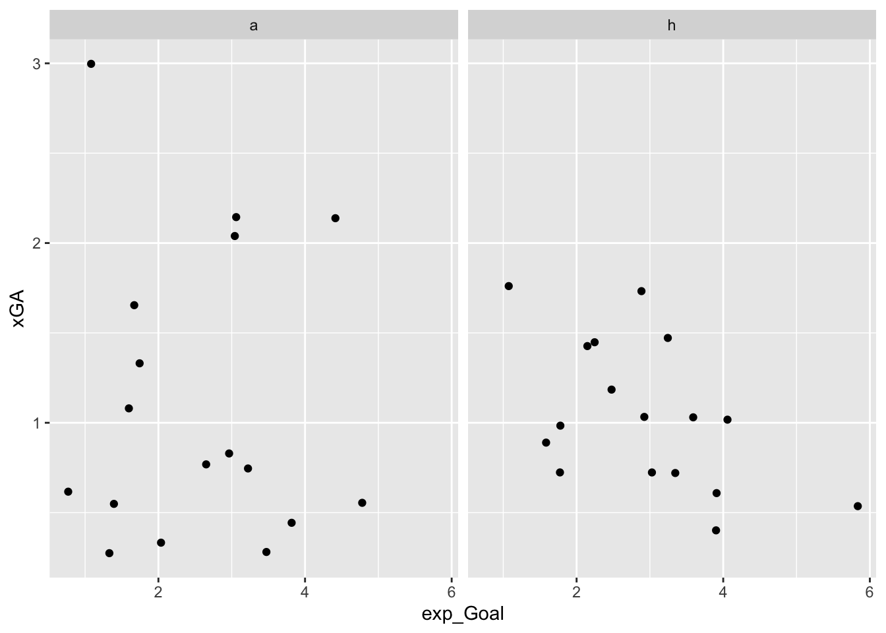
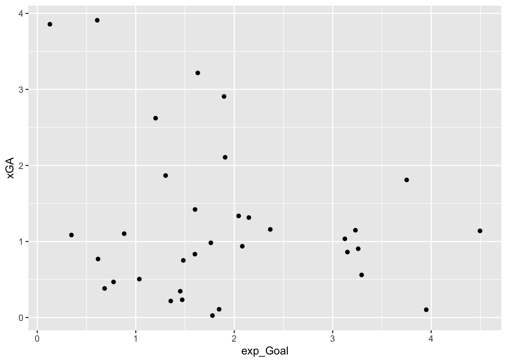
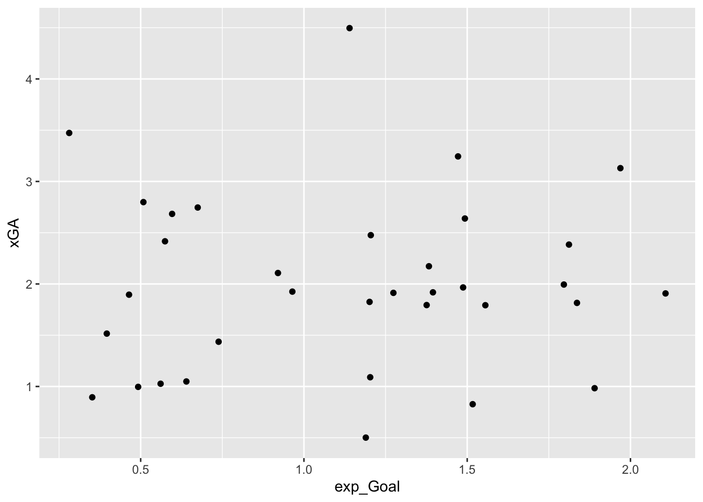
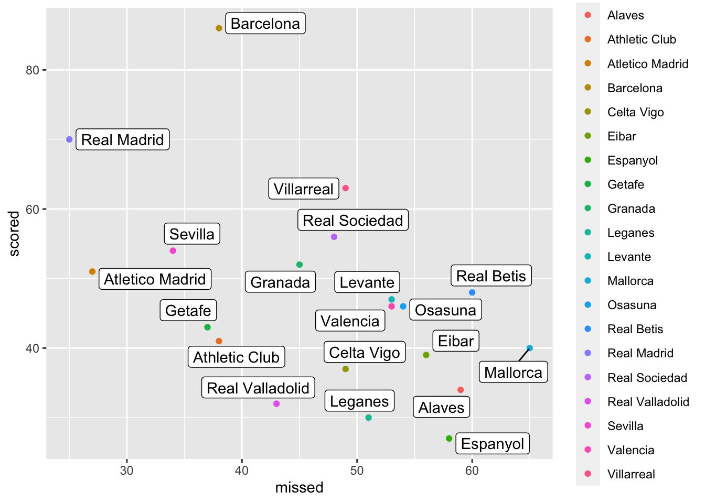
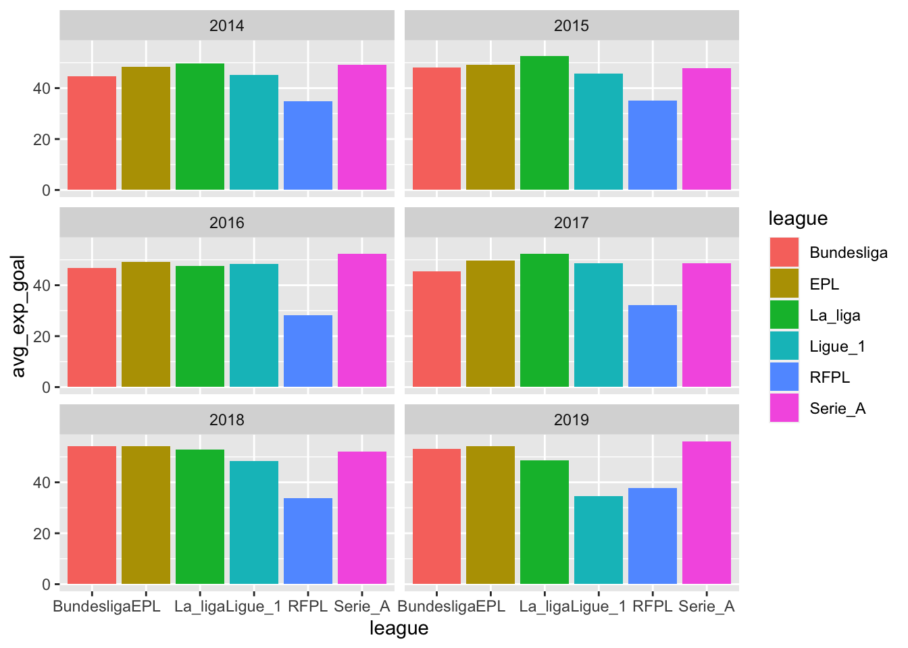
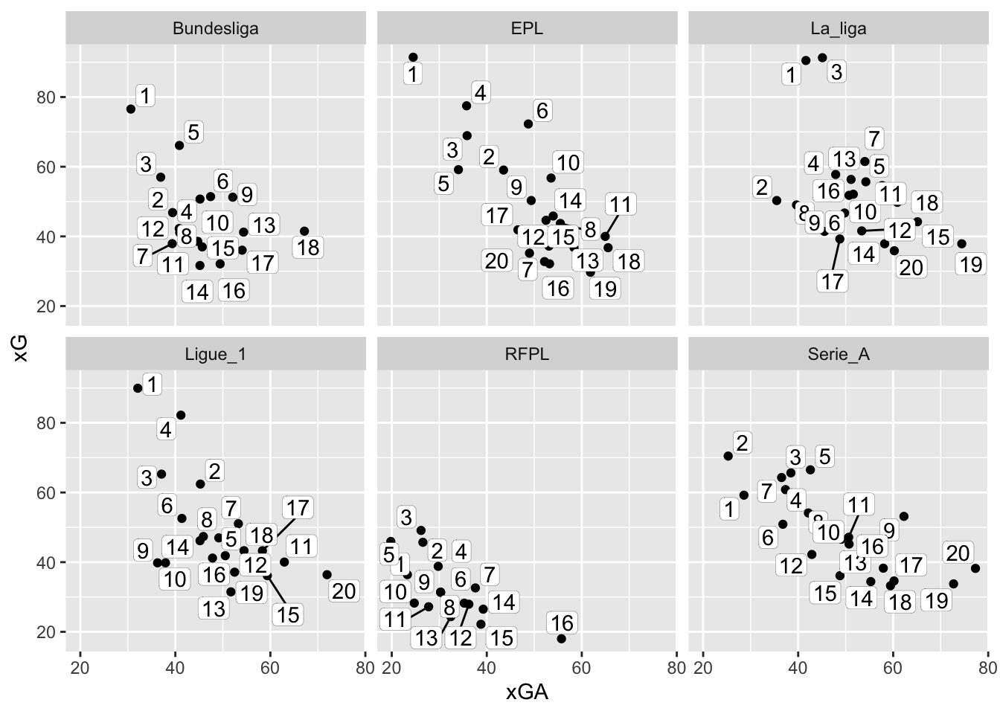
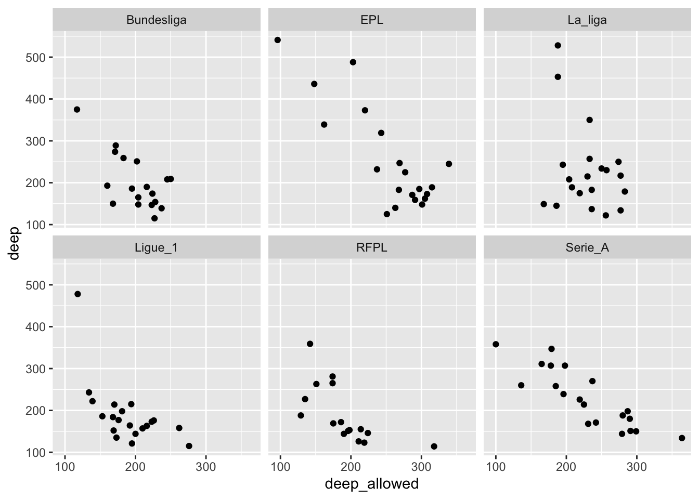
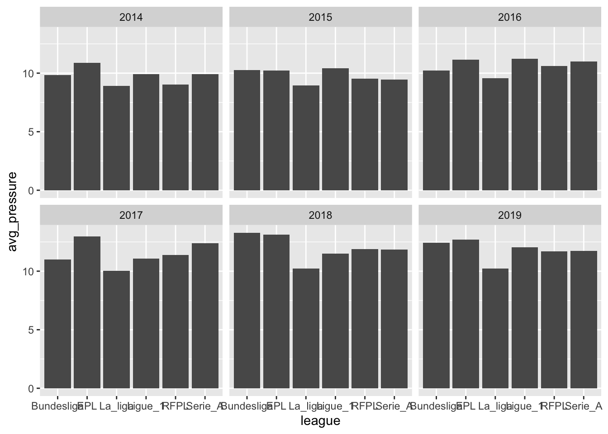
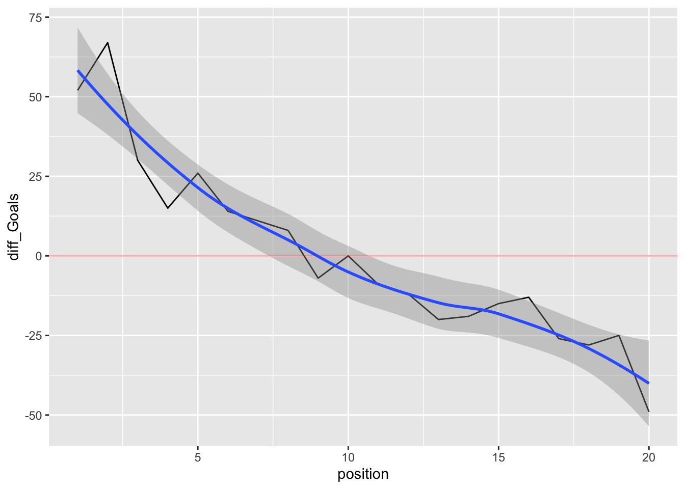
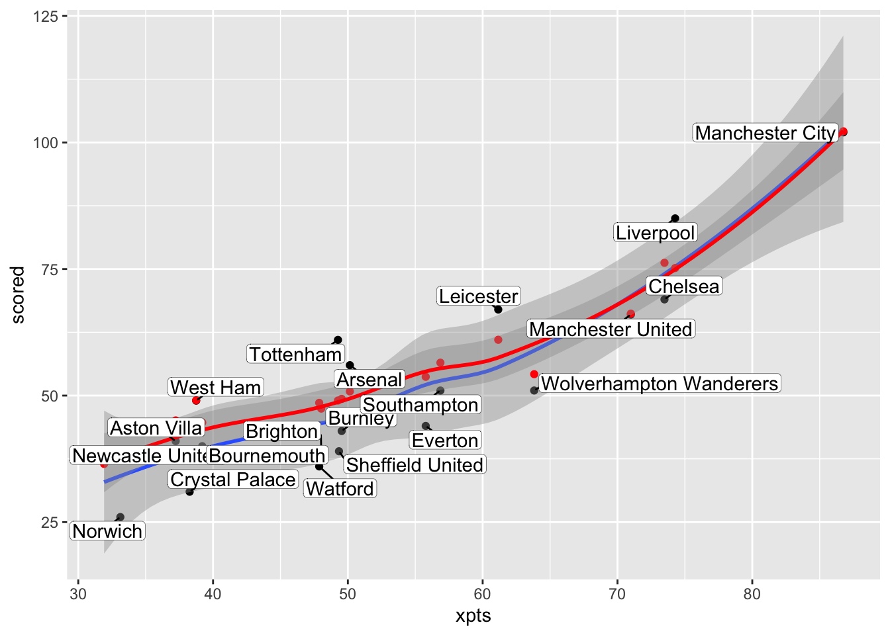

Quarto enables you to weave together content and executable code into a finished document. To learn more about Quarto see https://quarto.org.
Running Code
When you click the Render button a document will be generated that includes both content and the output of embedded code. You can embed code like this:
library(tidyverse)
── Attaching core tidyverse packages ──────────────────────── tidyverse 2.0.0 ──
✔ dplyr 1.1.2 ✔ readr 2.1.4
✔ forcats 1.0.0 ✔ stringr 1.5.0
✔ ggplot2 3.4.2 ✔ tibble 3.2.1
✔ lubridate 1.9.3 ✔ tidyr 1.3.0
✔ purrr 1.0.2
── Conflicts ────────────────────────────────────────── tidyverse_conflicts() ──
✖ dplyr::filter() masks stats::filter()
✖ dplyr::lag() masks stats::lag()
ℹ Use the conflicted package (<http://conflicted.r-lib.org/>) to force all conflicts to become errors
#read the datadata1 <-read_csv(file ="data/understat_per_game.csv")
Rows: 24580 Columns: 29
── Column specification ────────────────────────────────────────────────────────
Delimiter: ","
chr (4): league, h_a, result, team
dbl (24): year, xG, xGA, npxG, npxGA, deep, deep_allowed, scored, missed, x...
dttm (1): date
ℹ Use `spec()` to retrieve the full column specification for this data.
ℹ Specify the column types or set `show_col_types = FALSE` to quiet this message.
data2 <-read_csv(file ="data/understat.com.csv")
New names:
Rows: 684 Columns: 24
── Column specification
──────────────────────────────────────────────────────── Delimiter: "," chr
(2): ...1, team dbl (22): ...2, position, matches, wins, draws, loses, scored,
missed, pts, ...
ℹ Use `spec()` to retrieve the full column specification for this data. ℹ
Specify the column types or set `show_col_types = FALSE` to quiet this message.
• `` -> `...1`
• `` -> `...2`
perTeam <- data_per_game |>group_by(year, league, team) |>filter(year ==2015, league =="Bundesliga", team =="Bayern Munich") |>count(result)#here you could plot a chart to compare a time series of the xG per each league during the last five yearsdat1 <- data_per_game |>group_by(year, league) |>summarise(avg_Exp_goal =mean(exp_Goal))
`summarise()` has grouped output by 'year'. You can override using the
`.groups` argument.
#expGoal per each league across different years ggplot(dat1) +geom_point(aes(league, avg_Exp_goal)) +facet_wrap(~year)
data_per_game |>filter(year ==2019, league =="Bundesliga", team =="Bayern Munich") |>ggplot() +geom_point(aes(exp_Goal, xGA)) +facet_wrap(~stadium)

data_per_game |>filter(year ==2019, league =="Bundesliga", team =="Borussia Dortmund") |>ggplot() +geom_point(aes(exp_Goal, xGA))

data_per_game |>filter(year ==2019, league =="Bundesliga", team =="Paderborn") |>ggplot() +geom_point(aes(exp_Goal, xGA))

#let's if there is a difference in xG and xGA playing at home or awaydata_per_game |>filter(year ==2019, league =="Bundesliga", team =="Bayern Munich") |>group_by(stadium) |>summarise(avg_exp_goal =mean(exp_Goal), avg_exp_goal_A =mean(xGA))
# A tibble: 2 × 3
stadium avg_exp_goal avg_exp_goal_A
<fct> <dbl> <dbl>
1 a 2.53 1.10
2 h 2.93 1.04
The echo: false option disables the printing of code (only output is displayed).
library(ggrepel) data1 <- data_per_club |>filter(year ==2019, league =="La_liga")ggplot(data1, aes(missed, scored)) +geom_point(aes(color = team)) + ggrepel::geom_label_repel(aes(label = team), data = data1)

data_per_club |>filter(year ==2018) |>group_by(league) |>ggplot() +geom_line(aes(position, pts, color = league))
# average expected goal per season for each league data_per_club |>group_by(year, league) |>summarise(avg_exp_goal =mean(xG)) |>ggplot() +geom_bar(aes(x = league,y = avg_exp_goal, fill = league), stat ="Identity") +facet_wrap(~year, nrow =3)
`summarise()` has grouped output by 'year'. You can override using the
`.groups` argument.

# a pattern where along the ranking decreasing relation btw xG and xGA almost the same for each leaguedata5<- data_per_club |>filter(year ==2017) |>group_by(league)ggplot(data5, aes(xGA, xG)) +geom_point() +facet_wrap(~league) + ggrepel::geom_label_repel(aes(label = position), data5, max.overlaps =22, label.size =0.05, label.padding =0.12, point.padding =0.12, box.padding =0.09, force =0.1) +facet_wrap(~league, nrow =2)

# the best teams are the ones that play deep a lot and the worst are the ones who allawed the depthdata_per_club |>filter(year ==2017) |>group_by(league) |>ggplot() +geom_point(aes(deep_allowed, deep)) +facet_wrap(~league)

data_per_game |>group_by(year, league) |>summarise(avg_deep =mean(deep)) |>ggplot() +geom_bar(aes(x = league,y = avg_deep, fill = league), stat ="Identity") +facet_wrap(~year, nrow =3)
`summarise()` has grouped output by 'year'. You can override using the
`.groups` argument.
`summarise()` has grouped output by 'year'. You can override using the
`.groups` argument.

# ranking considering the differece in goals scored and receiveddata_per_club |>filter(year ==2017, league =="EPL") |>select(position, team, diff_Goals) |>arrange(desc(diff_Goals))
# A tibble: 20 × 3
position team diff_Goals
<dbl> <chr> <dbl>
1 1 Manchester City 79
2 4 Liverpool 46
3 2 Manchester United 40
4 3 Tottenham 38
5 5 Chelsea 24
6 6 Arsenal 23
7 7 Burnley -3
8 9 Leicester -4
9 12 Newcastle United -8
10 10 Crystal Palace -10
11 8 Everton -14
12 11 Bournemouth -16
13 17 Southampton -19
14 13 West Ham -20
15 14 Watford -20
16 15 Brighton -20
17 20 West Bromwich Albion -25
18 19 Swansea -28
19 16 Huddersfield -30
20 18 Stoke -33
data_per_club |>filter(year ==2019, league =="EPL") |>ggplot() +geom_line(aes(position, diff_Goals)) +geom_hline(yintercept =0, color ="red", linewidth =0.2) +geom_smooth(aes(position, diff_Goals))
`geom_smooth()` using method = 'loess' and formula = 'y ~ x'

# it seems that there is a significance difference btw an hypothetical ranking using xpts # and the actual rankdata_per_club |>filter(year ==2019, league =="EPL") |>select(position, team, xpts, xG_diff) |>arrange(desc(xpts))
# A tibble: 20 × 4
position team xpts xG_diff
<dbl> <chr> <dbl> <dbl>
1 2 Manchester City 86.8 0.205
2 1 Liverpool 74.3 -9.81
3 4 Chelsea 73.5 7.23
4 3 Manchester United 71.0 0.187
5 7 Wolverhampton Wanderers 63.8 3.22
6 5 Leicester 61.2 -5.98
7 11 Southampton 56.9 5.50
8 12 Everton 55.8 9.71
9 8 Arsenal 50.1 -5.18
10 9 Burnley 49.5 6.35
11 10 Sheffield United 49.3 6.81
12 6 Tottenham 49.3 -12.0
13 15 Brighton 48.0 8.42
14 18 Watford 47.9 12.6
15 19 Bournemouth 39.2 4.67
16 16 West Ham 38.7 0.0691
17 14 Crystal Palace 38.3 3.45
18 17 Aston Villa 37.2 4.09
19 20 Norwich 33.1 11.2
20 13 Newcastle United 31.9 -1.51
# let's try to find which variable could explain this behaviordata_per_club |>filter(league =="EPL", year ==2019) |>ggplot(aes(xpts, scored)) +geom_point() +geom_smooth(aes(xpts, scored)) +geom_point(aes(xpts, xG), color="red") +geom_smooth(aes(xpts, xG), color ="red") + ggrepel::geom_label_repel(aes(label = team),box.padding =0.1, label.padding =0.1, min.segment.length =0.1,label.size =0.09)
`geom_smooth()` using method = 'loess' and formula = 'y ~ x'
`geom_smooth()` using method = 'loess' and formula = 'y ~ x'

# it seems that when scored is higher than xg this could explain why the team has a lower position in the ranking sorted with the tot xpts # this theory is confirmed if we look at the xgDiff